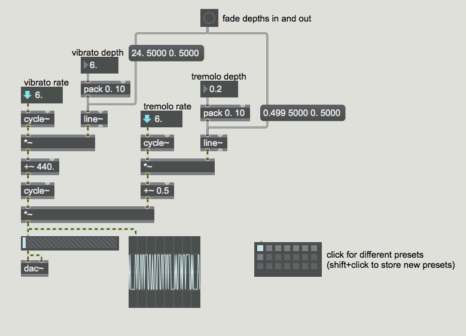

In electronic music parlance, the word "modulation" means change, specifically the continuous or cyclical change caused by using one signal to control another. The controlling signal, known as the modulator, is used to control some property of the sound signal we're listening to, called the carrier.
Open the patch "vibratoandtremolo.maxpat"
This patch shows the use of low-frequency oscillators (LFOs) to modulate the frequency and the amplitude of a carrier oscillator. Low-frequency frequency modulation is called vibrato, and low-frequency amplitude modulation is called tremolo. The frequency of the modulating oscillator(s) determines the rate of the vibrato or tremolo effect, whereas the amplitude of the modulator determines the amount of modulation, sometimes called the depth, which determines the intensity of the effect.
We use a constant value to provide a base, or center, for the frequency and the amplitude: a center frequency of 440 Hz and a center amplitude of 0.5. To those, we add the outputs of the modulating oscillators. The cycle~ object produces a sinusoid in the range from -1 to 1, which we can then scale to any amplitude by multiplication. Initially, with preset 1 chosen, the rate of both modulating oscillators is 6Hz; the depth of the frequency modulation is 6, causing vibrato from 434 Hz to 446 Hz (approximately ±1/8 tone), and the depth of amplitude modulation is 0.2, causing amplitude tremolo between 0.3 and 0.7 (approximately ±3 dB). If you click on the button, the depth of frequency modulation will gradually increase to 24 (approx. ±1 semitone) and the amplitude modulation will increase to a range of about 40 dB, then both will gradually decrease to 0. Try clicking on the other presets to hear different effects. (Note that in presets 6 and 7 one of the modulators is at an audio rate, causing new harmonics to be produced.)
Experiment with your own rate and depth settings. What happens when you start nesting LFOs (i.e. having LFOs control LFOs)?
Download the files used in the above examples by right-clicking the links, and then selecting "Save Link As...".